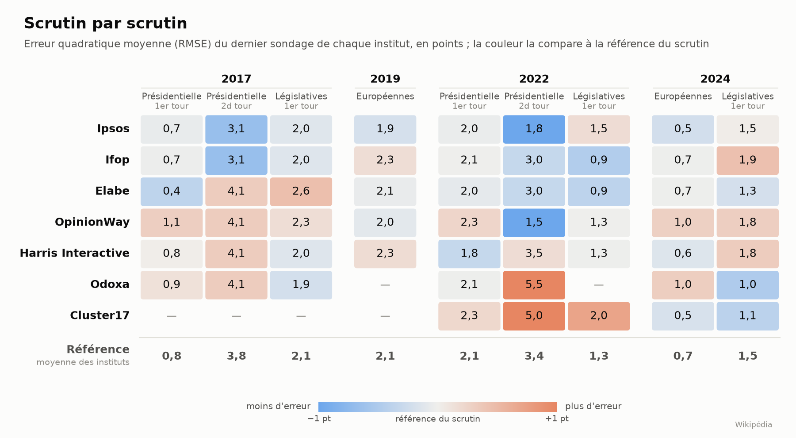

Les instituts face aux urnes
Ifop, Ipsos, OpinionWay, Harris Interactive, Elabe, Odoxa et Cluster17 : à chaque scrutin national depuis 2017, leur dernier sondage confronté au résultat.
La méthode
-
Le sondage retenu
Pour l'institut i et le scrutin s : son dernier sondage, celui dont le terrain s'achève le plus tard, au plus 14 jours avant le vote (plusieurs sondages achevés le même jour sont moyennés). On note xi,c l'intention de vote qu'il donne au candidat c, en % des suffrages exprimés.
Les sondages antérieurs sont ignorés : l'opinion bouge en fin de campagne, et les moyenner pénaliserait les instituts qui publient souvent.
-
L'erreur
La racine de l'erreur quadratique moyenne (RMSE), en points :
où rc est le résultat officiel, et la somme porte sur les n candidats ou listes ayant obtenu au moins 1 % des exprimés, publiés par tous les instituts du scrutin. Le carré pèse plus sur une grosse erreur que sur plusieurs petites. Si un institut agrège deux colonnes (RN et LR-Ciotti en 2024), tous sont évalués sur l'agrégat.
-
La référence et le score
La référence d'un scrutin, Esréf, est l'erreur moyenne des ms instituts qui l'ont sondé ; le score, l'écart moyen à cette référence sur les Ni scrutins couverts :
Négatif, l'institut se trompe moins que ses concurrents. La référence neutralise la difficulté propre à chaque scrutin et rend comparables des instituts qui n'ont pas couvert les mêmes (Cluster17 n'existait pas en 2017).
Exemple : Ipsos, présidentielle 2022, 1er tour
Son dernier sondage s'achève le 8 avril 2022, 2 jours avant le vote. Écart = sondage − résultat, en points : négatif, le candidat était sous-estimé. Arthaud (LO) et Poutou (NPA), sous 1 % des voix, ne comptent pas.
| Candidat | Sondage | Résultat | Écart | Écart² |
|---|---|---|---|---|
| Macron (LREM) | 26,5 | 27,85 | −1,35 | 1,82 |
| Le Pen (RN) | 22,5 | 23,15 | −0,65 | 0,42 |
| Mélenchon (LFI) | 17,5 | 21,95 | −4,45 | 19,80 |
| Zemmour (REC) | 9 | 7,07 | +1,93 | 3,72 |
| Pécresse (LR) | 8,5 | 4,78 | +3,72 | 13,84 |
| Jadot (EELV) | 5 | 4,63 | +0,37 | 0,14 |
| Lassalle (RES) | 2 | 3,13 | −1,13 | 1,28 |
| Roussel (PCF) | 3 | 2,28 | +0,72 | 0,52 |
| Dupont-Aignan (DLF) | 2,5 | 2,06 | +0,44 | 0,19 |
| Hidalgo (PS) | 2 | 1,75 | +0,25 | 0,06 |
| Moyenne des 10 carrés | 4,18 | |||
- Erreur. E = √4,18 = 2,04 points. À eux deux, Mélenchon et Pécresse font 80 % de la somme des carrés : élever au carré fait peser les grosses erreurs.
- Référence. Les 7 instituts présents se trompent en moyenne de 2,08 points sur ce scrutin. Écart d'Ipsos : 2,04 − 2,08 = −0,04.
- Score. Même calcul sur ses 9 scrutins, puis moyenne : erreur 1,67, référence 1,97, score −0,30. C'est la ligne d'Ipsos du premier graphique.

Chaque petit cercle est l'écart d'un scrutin, le gros point leur moyenne : le score. À droite, le même score posé en soustraction. Plus les cercles sont dispersés, moins le score est solide : un seul scrutin manqué peut suffire à faire passer un institut d'un côté à l'autre de la référence.

Dans chaque case, l'erreur Ei,s en points ; sa couleur la compare à la référence du scrutin, en dernière ligne. Cette erreur que tous partagent pèse souvent plus lourd que ce qui les sépare.
Source : les listes de sondages de Wikipédia et leur ligne « Résultats » (résultats officiels). Le détail des sondages retenus, candidat par candidat : derniers_sondages.csv. Le code : instituts.py.